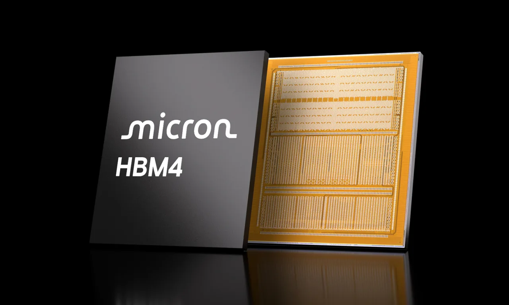

마이크론 주주가 지금 가장 궁금해할 질문은 “HBM4를 엔비디아 차세대 플랫폼에 넣었느냐”에서 한 걸음 더 나아갑니다. 이미 시장은 마이크론이 AI 메모리 사이클의 수혜 기업이라는 사실을 알고 있습니다. 이제 중요한 것은 그 수혜가 한두 분기 매출 급증으로 끝나는지, 아니면 높은 매출총이익률과 잉여현금흐름으로 반복되는지입니다.
마이크론은 2026회계연도 2분기에 매출 238.6억달러, GAAP 순이익 137.9억달러, 영업현금흐름 119.0억달러를 발표했습니다. 전년 같은 분기 매출 80.5억달러와 비교하면 숫자의 크기부터 완전히 달라졌습니다. 더 놀라운 지점은 매출 증가만이 아닙니다. GAAP 매출총이익률이 74.4%, 조정 잉여현금흐름이 69.0억달러까지 올라왔습니다.
이 정도 실적이 나오면 주가는 보통 “얼마나 더 갈 수 있나”를 묻기 시작합니다. 마이크론은 메모리 회사라서 사이클의 그림자가 늘 따라옵니다. 하지만 이번 사이클은 과거 PC·스마트폰 중심의 D램 사이클과 다릅니다. AI 데이터센터가 HBM, 고용량 서버 D램, 기업용 SSD를 동시에 끌어당기고 있기 때문입니다.
좋아진 실적보다 반복성이 더 중요합니다

마이크론의 2026회계연도 2분기 실적은 강합니다. 매출은 직전 분기 136.4억달러에서 238.6억달러로 뛰었고, 영업현금흐름도 직전 분기 84.1억달러에서 119.0억달러로 늘었습니다. 회사는 2026회계연도 3분기 매출 전망을 335억달러 안팎으로 제시했고, 매출총이익률도 약 81%를 예상했습니다. 이 전망은 단순한 회복이 아니라 공급 부족과 고부가 제품 믹스가 동시에 작동하고 있음을 보여줍니다.
하지만 투자자는 숫자가 너무 좋을수록 조심해야 합니다. 매출총이익률 70%대와 80% 전망은 메모리 기업의 평상시 얼굴이 아닙니다. 수요가 폭발하고 공급이 빡빡하며 고객이 높은 가격을 받아들일 때 나오는 숫자입니다. 따라서 마이크론을 볼 때는 “이번 분기 이익이 좋다”보다 “다음 세대 HBM과 서버 메모리에서도 가격과 물량이 유지되는가”를 먼저 봐야 합니다.
좋은 점도 분명합니다. 마이크론은 과거보다 AI 데이터센터 쪽 비중이 더 커졌고, 고객이 단순히 낮은 가격만 찾는 상황이 아닙니다. HBM은 성능, 전력 효율, 패키징 안정성, 공급 일정이 함께 맞아야 합니다. 이 구도에서는 잘 검증된 공급자가 더 높은 가격을 받을 여지가 생깁니다. 그래서 마이크론의 실적을 읽을 때는 D램 가격표보다 HBM 고객 인증과 데이터센터 매출 비중을 같이 봐야 합니다.
HBM4는 제품명이 아니라 플랫폼 티켓입니다
관련 영상
마이크론 HBM4와 SOCAMM2 데이터센터 메모리 해설 영상
마이크론은 2026년 3월 HBM4 36GB 12단 제품이 양산 단계에 들어갔고, 엔비디아 베라 루빈 플랫폼용으로 설계됐다고 발표했습니다. 회사 설명에 따르면 이 제품은 2.8TB/s를 넘는 대역폭과 HBM3E 대비 20% 이상 개선된 전력 효율을 목표로 합니다. 또 48GB 16단 HBM4 샘플을 고객에게 공급해 용량 확장 가능성도 보여줬습니다.
여기서 핵심은 HBM4라는 이름 자체가 아닙니다. 마이크론이 주요 AI 플랫폼 안에서 실제 자리를 얻고 있느냐입니다. HBM은 GPU 옆에 붙는 보조 부품처럼 보이지만, 실제로는 AI 서버의 처리량과 전력 효율을 좌우합니다. 고객이 엔비디아 같은 플랫폼을 선택할 때 메모리 공급 안정성까지 함께 계산하므로, HBM 공급사는 단순 납품업체가 아니라 플랫폼 생태계의 일부가 됩니다.
관련종목을 보면 경쟁 구도가 더 분명합니다. 엔비디아는 플랫폼의 요구사항을 정하는 쪽이고, SK하이닉스와 삼성전자는 마이크론과 HBM 세대 전환을 두고 맞붙는 직접 경쟁자입니다. 마이크론이 높은 밸류에이션을 계속 받으려면 “미국 메모리 대안”이라는 문구보다 “차세대 AI 플랫폼에서 반복적으로 채택되는 공급자”라는 증거가 필요합니다.
현금흐름은 설비투자 뒤에 남아야 합니다
마이크론 실적에서 주목할 숫자는 조정 잉여현금흐름 69.0억달러입니다. 메모리 회사가 돈을 잘 벌어도 설비투자가 커지면 주주에게 남는 현금은 줄어듭니다. 마이크론도 예외가 아닙니다. 2026회계연도 2분기 설비투자는 순액 기준 50.0억달러였고, 정부 인센티브 유입은 13.8억달러였습니다. 이 숫자들은 이익의 질을 볼 때 반드시 함께 놓아야 합니다.
AI 메모리 사이클이 강할수록 마이크론은 생산능력을 늘리고, 첨단 패키징과 미국 내 제조 기반에도 돈을 써야 합니다. 이 투자가 좋은 투자인지는 당장 한 분기에는 판단하기 어렵습니다. 고객이 장기적으로 물량을 받아가고, HBM4 이후 세대에서도 같은 공급자가 유지되며, 설비 가동률이 높은 상태로 이어질 때 비로소 좋은 투자였다고 말할 수 있습니다.
정부 인센티브도 양면적입니다. 현금흐름에는 도움이 되지만, 공장 투자와 지역별 생산 의무를 함께 가져옵니다. 미국 내 공급망 안정성이 마이크론의 강점이 될 수 있지만, 투자 규모가 커질수록 업황이 식었을 때 고정비 부담도 커집니다. 그래서 마이크론 주주에게 필요한 질문은 “공장을 짓느냐”가 아니라 “공장을 지은 뒤에도 높은 매출총이익률과 현금흐름이 남느냐”입니다.
다음 분기 확인할 네 가지 숫자
마이크론을 볼 때 첫 번째 확인 지표는 매출총이익률입니다. 2026회계연도 3분기 회사 전망처럼 약 81% 수준이 현실화된다면 시장은 AI 메모리 가격 결정력을 더 강하게 인정할 가능성이 큽니다. 반대로 매출은 좋아도 매출총이익률이 빠르게 내려가면 공급 증가나 가격 조정이 시작됐다는 신호일 수 있습니다.
두 번째는 HBM4와 SOCAMM2의 출하 흐름입니다. 마이크론은 HBM4, 192GB SOCAMM2, PCIe Gen6 데이터센터 SSD를 함께 강조했습니다. 이 제품군은 모두 AI 서버 병목을 풀어 주는 부품입니다. 고객이 한 제품만 시험하는 단계에서 그치지 않고 메모리, 스토리지, 저전력 모듈을 묶어 채택하면 마이크론의 데이터센터 매출은 더 단단해질 수 있습니다.
세 번째는 설비투자와 잉여현금흐름의 균형입니다. 투자 규모가 커져도 조정 잉여현금흐름이 유지되면 주가는 고마진 사이클의 지속성을 믿을 수 있습니다. 반대로 매출 증가를 따라잡기 위해 투자만 먼저 커지고 현금흐름이 약해지면 시장은 다시 메모리 사이클의 부담을 가격에 반영할 수 있습니다.
네 번째는 경쟁사의 인증 속도입니다. SK하이닉스와 삼성전자가 HBM4에서 물량을 빠르게 늘리면 마이크론의 가격 협상력은 흔들릴 수 있습니다. 반대로 세 회사 모두 공급이 빠듯한 상태에서 AI 서버 수요가 더 빠르게 늘면 마이크론은 미국 기반 공급자라는 위치까지 더해져 프리미엄을 받을 수 있습니다.
마이크론에 대한 결론은 간단한 낙관론으로 끝내기 어렵습니다. 지금 숫자는 매우 좋고, HBM4 위치도 분명히 중요합니다. 다만 주주가 오래 확인해야 할 것은 뉴스의 크기가 아니라 현금의 반복성입니다. 매출총이익률, HBM4 고객 플랫폼, 설비투자, 잉여현금흐름이 같은 방향으로 움직일 때 마이크론의 재평가 논리는 훨씬 단단해집니다.